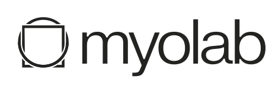
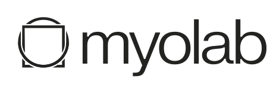

Jay Vakil
PhD Student at University of Colorado Boulder
Building robots that learn from the unstructured world.
Previously Meta AI (FAIR).
Advised by Alessandro Roncone and
Nikolaus Correll.
Research
Open X-Embodiment
Scaling robotic learning via the RT-X model and a massive cross-platform dataset of 60+ robots. The 'ImageNet' moment for robotics.
RoboAgent
Universal robot learning with semantic augmentations. Teaching robots broadly generalizable skills with minimal data through action chunking.
OK-Robot
A zero-shot system for open-vocabulary mobile manipulation. Integrating Vision-Language Models with classical navigation primitives to handle messy environments.
Dynamics-Compliant Trajectory Diffusion
Payload-conditioned diffusion model for generating dynamic motions for robots handling super-nominal payloads.
Sim-to-Real Visual Representations
A large-scale study of pre-trained visual representations in sim and real environments to understand transfer efficacy.
Visual Cortex for Embodied Intelligence
Evaluating mid-level visual representations for robotic control tasks. Are we closer to an artificial visual cortex?
Spatial-Language Attention Policies
Efficient robot learning using spatial-language attention mechanisms for manipulation tasks.
RoboSet
A scalable multi-task real-world robotic dataset designed for generalized offline learning outcomes.
Impact & Press

Affiliations

 
